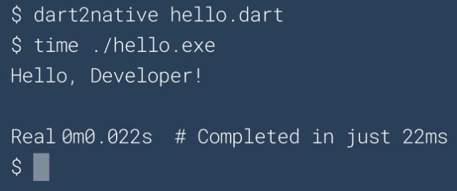

On the Degradation of Programming Culture
I would like to begin this post with this short video of Grace Hopper to remind us that computers, even the most rudimentary ones, have always operated at very high speeds. As early as the 1950s, there was already a culture of extracting every nanosecond of processing from the CPU.
On the other hand, jumping forward to 2020, we have large tech companies boasting about new languages capable of compiling and printing “Hello World” to the console in “just” 22ms, as shown in this screenshot from the Dart website.

If you arrived on planet Earth just now, you might not be aware that there is a global pandemic and that every business that can is operating remotely. At Aquiris, where I work, it is no different. We are using several solutions to keep communication flowing, such as Discord and Google Meet.
It was during one of these Google Meet sessions that the background image on the page caught my attention. I will show that image later. At the time, I made a post on Twitter commenting on that same image. I will reproduce the core idea of that post here to emphasize my argument.
The lamp problem in 1950
Consider the following hypothetical problem: a program that turns a lamp on/off via a button. A programmer from the 60s or 70s would likely write something like this:
typedef struct
{
...
bool isOn;
} Lamp;
void lamp_toggle_state(Lamp* lamp)
{
bool state = lamp->isOn;
lamp->isOn = !state;
}
Lamp lamp;
lamp_toggle_state(&lamp);
You may question some aspect of this implementation. But first and foremost, the code solves the problem in a direct, linear, and explicit way, and does exactly what it needs to do. Its only commitment is to the result it must produce and to the hardware on which it runs.
Notice that there are no side effects. Assigning a value to a variable does not result in the implicit invocation of some obscure method, nor hidden dynamic memory allocation, nor the duplication or copying of a data structure that might go unnoticed. If this program manifested itself as something tangible in the real world, it could very well resemble the image below.
The lamp problem in 2020
There is, however, a tendency to follow standards and “best practices” that, in general, are not based on how a computer actually works—how instructions are decoded and executed, or how best to organize data in memory to optimize cache access, etc. In the end, they resemble technical superstitions or dogmas. Thus, still considering our initial hypothetical problem—turning a lamp on and off with a button—modern culture and methodologies would certainly lead us to a different design. We begin with the good old practice of treating every noun as an “object.” So we have a Lamp class, a Button class, and why not, a LampState class for the lamp’s state itself.
The lamp would likely receive a reference to the button via its constructor. Since the button may be shared among multiple lamps, we pass a std::shared_pointer<Button> to the Lamp constructor. To avoid allocating a temporary Button instance, we construct Lamp while constructing Button inline using std::make_shared<Button>. And so we continue, thinking about aspects unrelated to solving the problem itself, shifting our focus to the programming language and writing code to satisfy other “requirements” such as RAII, Exception Safety, Const correctness, memory ownership, SOLID principles, and heaven forbid not implementing it via the PIMPL idiom. It feels like we must use every tool in the box to accomplish any task.
Still, after a few Design Patterns and Manifest Files, voilà! We have our software ready. Software that, if it materialized as something tangible—similar to the previous example—would likely resemble the image below.
As I mentioned at the beginning of this post, the image above is the Google Meet background that caught my attention, because I immediately associated it with the values and dogmas that govern “modern” software development. Many things are treated as indispensable and correct, even when they stand in the way of the software’s primary purpose: solving the problem efficiently.
It is clear that I resort to exaggeration in these examples to express my point of view. But the key question I leave for reflection is: how much of this exaggeration is actually real?
I question how many nanoseconds we—as an industry—are wasting, how many extra lines of code we are writing and maintaining, and how many additional layers of complexity we are introducing, and what benefits we are actually gaining from this way of developing software.
The degradation of programming culture
My personal opinion is that programming culture no longer has clear standards or good references for what constitutes good software. Many people have no idea how fast a modern CPU is, much less how to organize data in memory so that the CPU can operate at maximum efficiency and speed. It feels like we are in a time where no one creates anything anymore—only assembles pre-made parts. And if all software uses the same libraries, they all share the same bugs and vulnerabilities when they are discovered. Everyone is forced into the same designs because they use the same APIs, and gradually we are unlearning how to do basic things. In the end, we have more and more programmers, but less and less understanding of computers.
Software distribution complexity
I believe we are not only developing software in unnecessarily complex ways, but that this complexity also extends to how we distribute software. Everything has an installer, hundreds of files, registry entries, dozens of DLLs, etc. Rarely are these distribution choices justified.
Buy a modern keyboard and it will ask you to install two or three different programs. (I’m looking at you, Razer). For some mysterious reason, the software that controls macros cannot be the same one that controls key lighting or whatever. When and why did we stop distributing software as a simple executable file?
It is possible to do better. A good example is RemedyBG, a debugger developed by a single individual, distributed as a zip containing an executable and a readme.txt. Another good example is the STB libraries, extremely well-written libraries for various purposes, distributed as a single .h file. No SDK installers or other distractions. These good examples, however, are becoming increasingly rare.
Productivity vs Quality
For example, imagine hypothetically that Epic Games acquires Unity and removes it from the market to favor its own engine, Unreal. How many Unity developers would still be able to produce a PONG the next day? Although this is just speculation, it is worth recalling examples such as Adobe Flash and Microsoft XNA, where technologies disappeared overnight.
You might argue that it is not always worth the time to write an engine from scratch or render your own TTF fonts, and that it is easier to use a library that already does it. In many cases, this is true. But there is a cost. At the beginning of a project, we always want results. At the end, we always need control. That is when we discover that library X allocates memory when it shouldn’t, and framework Y has a bug with no timeline for a fix. These decisions ultimately reach the player or end user in the form of a poor experience: slow requests, frame drops, etc. And yet, we continue repeating this behavior project after project, claiming there is no time to build something that truly meets our specific needs.
What I mean is that we have stopped trying to understand the technologies we work with and have become dependent on libraries, engines, and tools to the point where we are no longer capable of producing something similar—or even better. When observed across the industry, this behavior is undoubtedly a sign of regression.
(Re)Inventing the wheel
As I mentioned earlier, perhaps due to a lack of good references, or because many of these practices are taught in universities—despite not holding up in real-world problems—we continue producing slow, heavy, hard-to-maintain software that is complex to distribute, while reusing poor libraries over and over again. It seems essential that we regain the ability to build new things ourselves when necessary: our own debuggers, text editors, game engines, programming languages, and operating systems—not only to create better software, but to keep alive the knowledge of how things work. Whenever I talk about this, someone inevitably asks: “why reinvent the wheel?”
This line of thinking is symptomatic of the degradation of programming culture I mentioned earlier. We keep using libraries that depend on other libraries, stacking abstractions on top of abstractions, all on top of hardware that we understand less and less—and no one seems to realize that 22ms to compile and print Hello World in the console is a terrible metric given the computers we have in 2020!
Returning to the question of the wheel: what exactly is “the wheel” in the context of the game industry, for example? The DOOM engine was a milestone in its time. If we treated it as “the wheel,” we would not have Unreal, Unity3D, Godot, and others. If rasterization were the wheel, we would not have ray tracing. But if all these “new” things keep emerging, how can I claim the industry is regressing?
Simple: all of this has been made possible by advances in hardware. Ray tracing, machine learning, and other modern computing marvels were conceived decades ago and are now viable thanks to hardware progress. The bad news is that, unlike decades ago, we no longer have strong projections of massive CPU speed increases. Which brings us back to the introduction of this post, with Grace Hopper reminding us that software must use hardware resources efficiently—and every nanosecond counts.
Saving the industry, the world, and the princess in the castle
I don’t have a perfect conclusion for this post. I don’t have a solution to the problems I’ve pointed out, and many people don’t even see them as problems. But I leave here my considerations and observations.
My understanding is that—as an industry—we need to return to experimenting and building things from scratch, or we will lose the knowledge of how to do them altogether. I also believe we must encourage the mindset of writing code that simply solves the problem efficiently—and that this rarely requires using every tool in the box at the same time. Because the more code we add outside the scope of the problem—often just to follow a “best practice” or for purely idiomatic reasons—the more layers of complexity we introduce, which in most cases only increases cost and degrades software quality.
Concluding...
Likewise, you don’t need to be a computer science genius to notice that some things are right and others are wrong—especially after more than 20 years writing all kinds of software, from telecommunications to games. Over that time, it has become clearly visible to me that both the overall quality of software and the culture of programming itself have been degrading.
My intention with this post is by no means to place myself on a pedestal as some great master of the arcane and elven arts of programming, qualified to declare what is right or wrong for the entire industry. But you don’t need to be a chef or an expert in gastronomy to notice that a dish tastes strange, looks questionable, or seems to have been made without much care or attention.